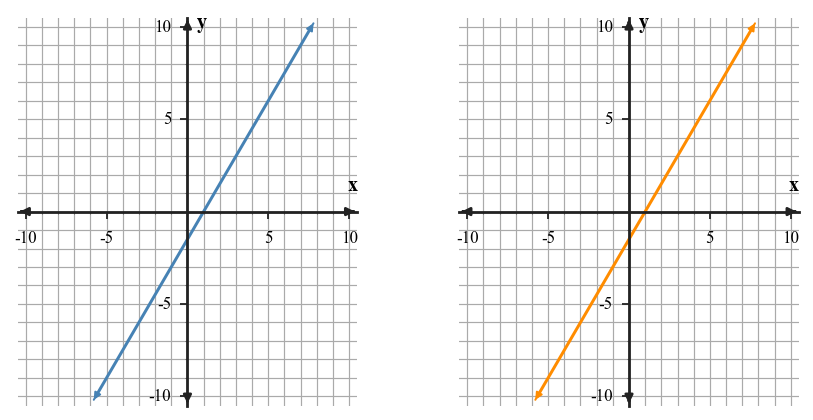

15.
Graph the system on the same axes, then state the point of intersection.

$$\begin{aligned}y=2x+3\\y=x+1\end{aligned}$$
This Practice Set 1 focuses on Section 4.1: Recognizing Function Families. Use the current problems to practice how to identify function families using equations, tables, graphs, and contextual evidence, then use the spirals to keep prior skills active.
A table has first differences that are not constant, but second differences are constant. Name the most likely family and the evidence.
A table multiplies by $3$ each time the input increases by $1$. Name the most likely family and the evidence.
Classify the family for the table and state the common ratio.
| $x$ | 0 | 1 | 2 | 3 |
|---|---|---|---|---|
| $y$ | 3 | 6 | 12 | 24 |
Classify the family for the table and describe its symmetry evidence.
| $x$ | -2 | -1 | 0 | 1 | 2 |
|---|---|---|---|---|---|
| $y$ | 5 | 2 | 1 | 2 | 5 |
Find the vertical change and horizontal change from $A(-2,3)$ to $B(4,9)$. Then write the slope ratio $\frac{\Delta y}{\Delta x}$.
A line has slope $-3$. State whether the line increases, decreases, is horizontal, or is vertical as $x$ increases.
In a gas-cost model, gas costs \$1.50 per gallon.
A line passes through $A(-3,-2)$ and $B(2,1)$. Does it also pass through $C(5,3)$? Justify by comparing slopes.
Without graphing, find the slope of each line:
Maya says the slope from $(-4,7)$ to $(2,1)$ is positive because both coordinates “move to the right.” Critique her reasoning and give the correct slope evidence.
Two students calculate the slope of the same line. Andre uses two points from a graph; Elena uses this table.
| $x$ | -1 | 1 | 3 | 5 |
|---|---|---|---|---|
| $y$ | -3 | 0 | 3 | 6 |
Compare the two methods. Which method is less likely to create an arithmetic error here, and why?

Create a short context with a constant rate of change of $-4$ units per step and a starting value of $30$. Include a table for four input values and one sentence explaining what the slope means in your context.
For the system $y=2x+1$ and $y=-x+7$, what does the ordered pair where the two lines cross represent?
Does $(3,1)$ satisfy both equations in the system $x+y=4$ and $2x-y=5$? State yes or no and name the equation that proves your answer.
Graph the system on the same axes, then state the point of intersection.
$$\begin{aligned}y=2x+3\\y=x+1\end{aligned}$$
A student solves the system below by adding the equations and says the solution is $y=5$.
$$\begin{aligned}2x+3y=16\\-2x+y=4\end{aligned}$$
Critique the student's conclusion. Identify the missing step and give the complete ordered-pair solution.
Name the family for a table with constant second differences.
A graph is V-shaped with vertex $(2,-3)$. Name the family and key point.
Does $(2,5)$ satisfy both $y=2x+1$ and $x+y=7$?
Find the slope from $(1,4)$ to $(5,12)$.